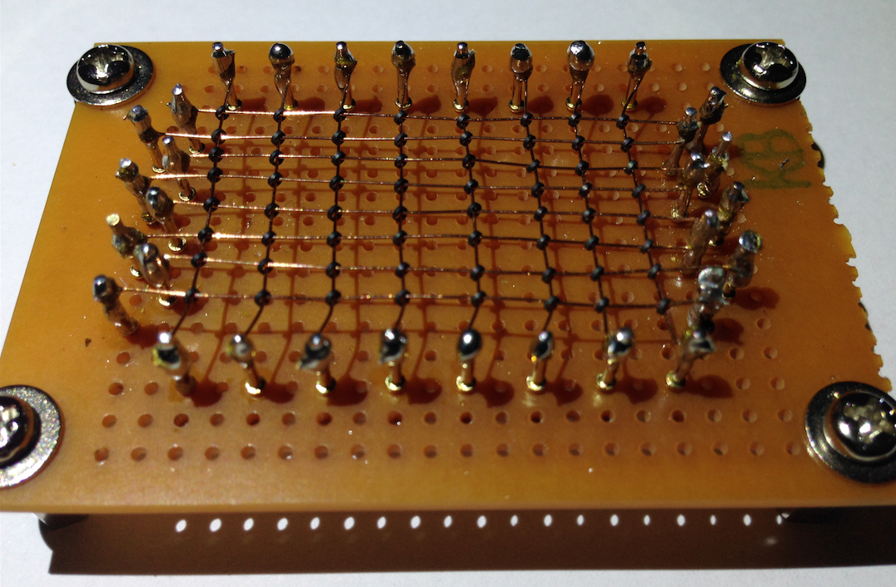

#include
using namespace std;
int main() {
// Fixed size declaration
int scores[5] = {88, 92, 77, 100, 85};
// Size inferred automatically
char vowels[] = {'a', 'e', 'i', 'o', 'u'};
// Print first vowel
cout << vowels[0] << endl;
return 0;
}
#include
using namespace std;
int main() {
int scores[5] = {88, 92, 77, 100, 85};
cout << "First score: " << scores[0] << endl;
scores[2] = 80; // Change 3rd element
cout << "Updated 3rd score: " << scores[2] << endl;
return 0;
}
#include
#include
using namespace std;
int main() {
vector scores = {88, 92, 77};
scores.push_back(100);
for (int i = 0; i < scores.size(); i++)
cout << scores.at(i) << endl; // Safe access
return 0;
}
Early memory (1950s–70s) used Magnetic Core Memory: tiny rings storing bits in a physical grid.
Its [row][col] access directly inspired array indexing.
Undefined behavior: your new superpower.